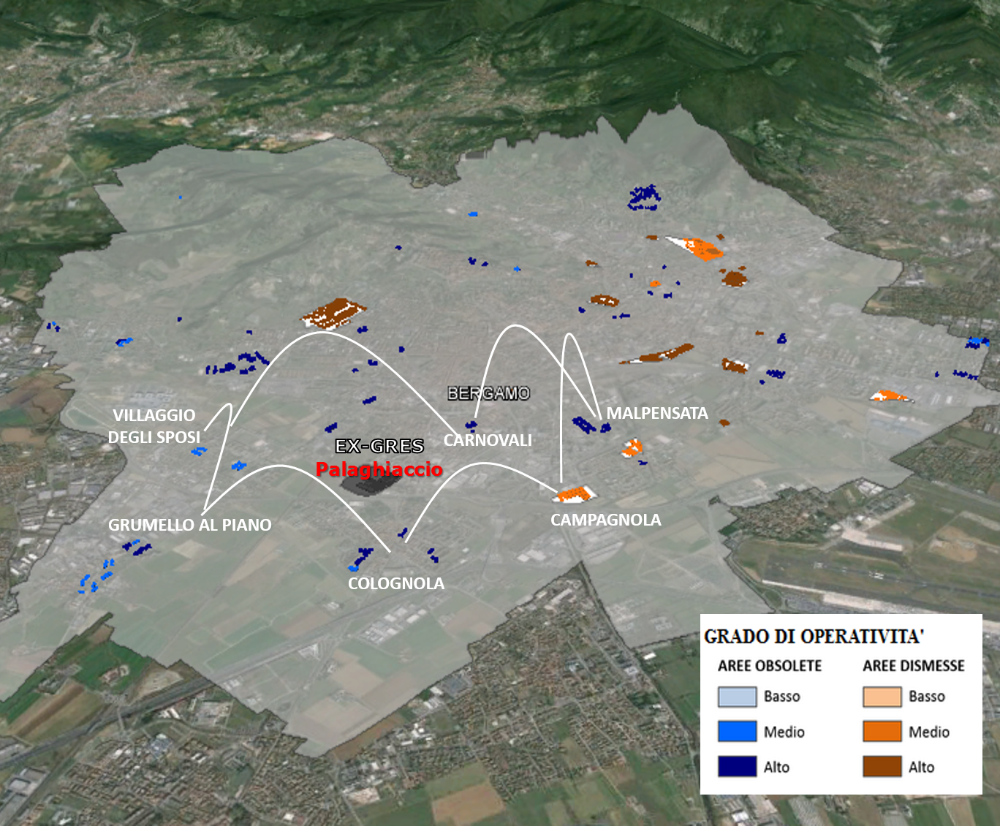

| Il ricentramento del metodo RIFO: dai quartieri di città alla città reticolare |
|  Dai quartieri di città alla città reticolare |
Dal momento che il metodo RIFO, definito dal DiathesisLab nell'ambito del progetto omonimo finanziato da Italcementi Group, presuppone una concezione di città basata sul quartiere, quindi areale, è stato necessario, in questa fase del lavoro, un ricentramento che, recuperando la visione della città reticolare e policentrica, assumesse la reticolarità quale elemento cardine dell'analisi. Il metodo RIFO prende in considerazione due diverse tipologie edilizie, quella del dismesso e quella dell’obsoleto ERP (Edilizia Residenziale Pubblica), proponendo un processo simbiotico di demolizione-ricostruzione strutturato in più fasi, che prevede:
L’applicazione del metodo RIFO all’area dell’ex-Gres, pur tenendo saldi i principi di base, richiede un allargamento del suo orizzonte. Nell’ottica della città policentrica e reticolare, tale metodo deve abbandonare l’idea delle periferie come elementi areali e assumerle nella loro sostanza di nodi urbani presenti nel tessuto cittadino, considerato come un corpo unico, da rimodulare per promuovere una socialità nuova, data dal policentrismo. In questa nuova prospettiva, quindi, la periferia non può più essere analizzata come un elemento separato dal resto della città, ma è necessario assumere il quartiere nella sua relazione reticolare con il resto della città . Ciò appare tanto più opportuno a Bergamo che storicamente possiede una struttura policentrica e reticolare per la presenza dei Corpi Santi, ossia una corona di borghi disposti attorno al centro urbano che hanno intrattenuto con quest’ultimo una relazione dialettica per secoli e che mantengono ancora oggi una propria identità forte. La criticità che oggi si registra a Bergamo relativa all’interscambio centro/periferia è dovuta all’inadeguatezza delle infrastrutture pubbliche di mobilità che si è venuta a creare nell’ultimo secolo in relazione all’aumento del movimento e della mobilità; precedentemente esisteva un interscambio funzionale sinergico interno ed esterno alla città il cui culmine si registrava in corrispondenza della Fiera di Sant’Alessandro (mese di agosto) quando la città attirava visitatori da tutta l’Italia settentrionale e anche da oltralpe (www.bgpublicspace.it). Bergamo costituisce un caso di studio ideale per l’applicazione di tale metodo essendo una città medio-piccola che si estende in pianura, condizione elettiva per lo sviluppo di una mobilità green favorito dalle distanze limitate. Inoltre, l’applicazione del metodo RIFO permetterebbe di capire come un intervento di rigenerazione urbana si possa porre rispetto all’idea di città reticolare e policentrica. È su tali presupposti che si può considerare Bergamo un potenziale modello di sviluppo applicabile ad altre città medio-piccole lombarde e italiane. |